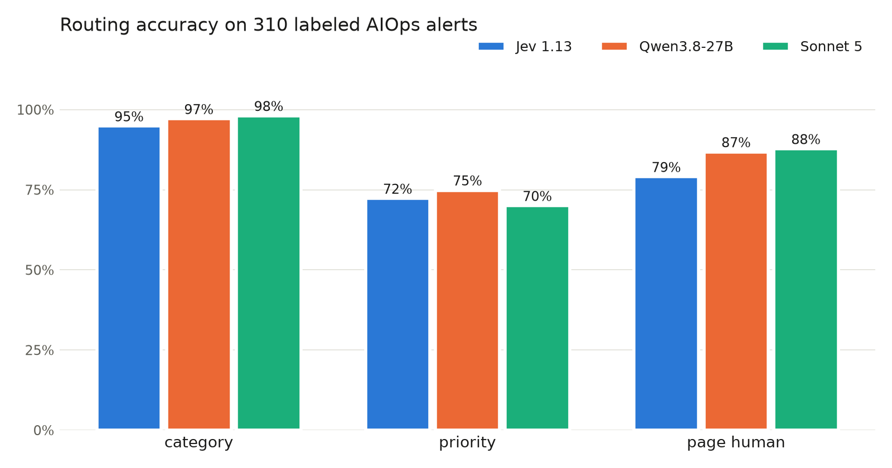
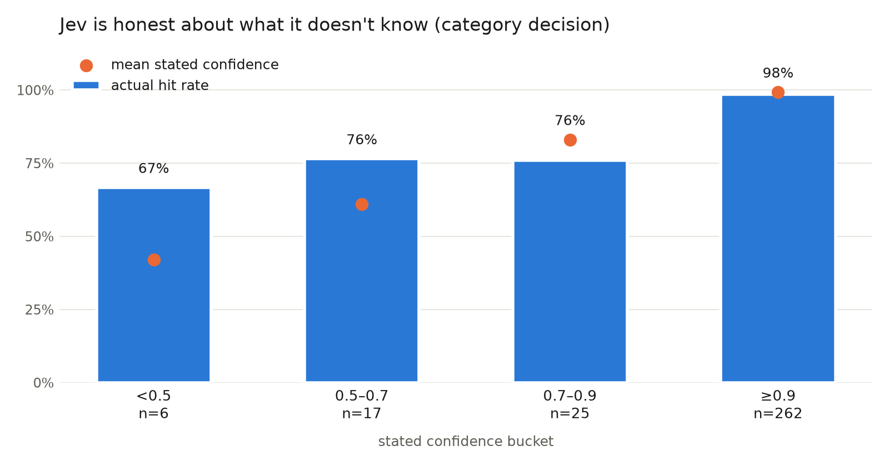

Jev can't write a sentence.
That's the whole hook. TypeSafe AI came out of stealth last week with a
model they call a "System One model": it doesn't generate text at all. You
send it state plus typed questions, it sends back probability distributions.
Their pitch is basically "a smart if statement" — 70–500ms,
$0.042 per million input tokens, output free, up to 100x faster and 200x
cheaper than using an LLM for the same decision.
Those are launch-week numbers from a launch-week company, and I have a place where they'd matter: I'm building an autonomous ops platform where a supervisor agent routes alerts to specialist agents, and every one of those routing decisions is currently an LLM call. If Jev's claims hold, that's exactly the layer it should own.
So this whole post is one experiment with one purpose: put Jev through realistic alert triage and see if it earns the routing layer. The LLMs in the comparison aren't the subject — they're the yardsticks Jev has to measure up against.
The experiment
To judge Jev you need a bar to clear, so it runs against two of them — the router I'd use today and the strongest one money buys:
- Jev 1.13 via TypeSafe's API — the model under test
- Qwen3.8-27B running locally on my M5 Max via LM Studio (the same model from my earlier eval episodes) — the practical yardstick
- Claude Sonnet 5 via OpenRouter, structured outputs — the frontier yardstick
The job is L1 triage, mirrored from my AIOps prototype: for each alert, decide category (capacity / availability / performance / security / noise), priority (P1/P2/P3), and page_human (yes/no). Every router answers the same three questions about the same 310 synthetic big-data-platform alerts — Kafka lag, BQ job failures, cert expiries, flapping hosts — each with a gold label, and about a quarter of them deliberately sitting on category boundaries, because boundary cases are where routers earn their keep.
Shadow-mode methodology: nothing acts on any answer, everything gets logged and scored after. Code and dataset: github.com/Suryals/jev-router-lab.
Jev's three primitives, and how I mapped triage onto them
The entire Jev API is one endpoint and three question types. That constraint is the design: if your decision doesn't fit one of these shapes, Jev is the wrong tool for it.
noul— a yes/no question, answered with a single probability (0–1). I use it for page_human:0.92means "page,"0.46means "coin flip, don't wake anyone on my account."choice— pick one option from acriteriamap (each option gets a one-line definition). Returns the chosen option, a full probability distribution over all options, and a confidence score. I use it for category and priority — the criteria strings are doing real work here; they're effectively the prompt.score— a graded scale with a legend (e.g. Cosmetic → Degraded → Blocking), returning a weighted mean plus distribution. I didn't use it: I kept priority as achoicebecause P1/P2/P3 are policy buckets with an on-call contract attached, not points on a continuum. Blast-radius or severity estimation would be the naturalscoreuse, and it's on the list for the asymmetric-paging follow-up.
One request carries the alert as state plus all three
questions, and Jev evaluates them in parallel against the same state — so
triage is one ~330ms round trip, not three:
ask(state={"alert": alert_text}, questions={
"category": choice("What type of alert is this?", CATEGORIES),
"priority": choice("What priority should this alert get?", PRIORITIES),
"page_human": noul("Should this alert page an on-call human right now, "
"as opposed to being handled by automation or a ticket?"),
})Two field-notes from wiring this up: choice takes
criteria, not options (the SDK examples hide the raw
shape), and the criteria wording is your main tuning lever — my
noise-vs-performance confusions later in this post trace straight back to how
I phrased those one-liners.
First lesson: I benchmarked my own TLS handshakes
My first Jev run measured p50 850ms and I nearly wrote off their latency claims. Then I looked at a curl timing breakdown: ~300ms TCP round trip to their US endpoint (I'm in India — physics), plus ~300ms of TLS handshake on every call, because my client opened a fresh connection each time.
One persistent httpx.Client later: p50 331ms, of which
maybe 50–100ms is actual inference. Their 70–500ms claim holds. Old SRE
lesson, new costume: connection pooling is the difference between claimed and
observed latency, and if your agent framework makes routing calls without a
keep-alive client, you're adding half a second of pure handshake to every
hop.
How Jev measured up

| n=310, same schema | Jev 1.13 | Qwen3.8-27B (local) | Sonnet 5 |
|---|---|---|---|
| category | 95% | 97% | 98% |
| priority | 72% | 75% | 70% |
| page_human | 79% | 87% | 88% |
| latency p50 / max | 331ms / 955ms | 3.2s / 79s | 4.6s / 9.3s |
| cost per alert | $0.000023 | $0 marginal | $0.0024 |
| cost per 1M alerts | ~$23 | $0 marginal | ~$2,430 |
Three things jumped out.
Jev gives up almost nothing to the frontier model. Sonnet wins category by 3 points and page_human by 9, at 100x Jev's per-alert cost and 14x its latency — and Jev actually beats it on priority. For structured triage decisions, what you're buying from an LLM is mostly wasted reasoning. (Sonnet's run cost $0.75 total. Jev's cost $0.0072. The local model cost sixteen minutes of my Mac's time.)
Jev is the only one of the three that survives the paging path. Qwen's median is a tolerable 3.2s, but its worst case was 79 seconds on one alert — a router that occasionally takes 79s isn't a router, it's a liability. Jev's worst case across all 310 alerts: 955ms.
Priority is hard for everyone — suspiciously so. 70–75% across three very different models is less a model ranking than a smell that my P1/P2/P3 gold labels have ambiguity in them. I'm treating that as a rubric problem to fix, not a finding to publish. (Caveat repeated below, because it matters.)
The interesting part: calibration
Accuracy was never really the question — the question is whether Jev knows when it doesn't know, because that's what makes a fast/slow hybrid architecture work.

On the category decision, Jev put 262 of 310 answers in the ≥0.9 confidence bucket and was right on 98% of them. Below 0.9, accuracy drops to ~75% — and Jev tells you so by lowering its stated confidence. My favorite single result: a Dataproc cluster losing workers while the autoscaler recovered them. Jev classified it correctly at 0.34 confidence — which is exactly the answer you want from an L1: "here's my guess, but escalate this one."
It's not infallible. Five answers were confidently wrong (≥0.9 confidence,
wrong category) — mostly noise-vs-something boundary cases, like a
known-misconfigured cron's failed logins classified as security
at 0.99. A threshold policy alone will never catch those five. Calibration
means the confidence numbers are honest on average, not that any single 0.99
is a guarantee.
The architecture that falls out
Gate on confidence: Jev answers everything; below 0.9, escalate to an LLM.
On category, that hybrid hits 97% — matching the LLMs — while escalating only 48 of 310 alerts (15%). And here's the detail I didn't expect: it scores 97% regardless of whether the fallback is local Qwen or Sonnet, because only the hard 15% ever reaches the fallback. So the rational stack is Jev + the local model: ~$23 per million alerts, sub-second median, no external dependency on the escalation path, and the slow model only wakes up where latency matters least.
That's the Kahneman framing TypeSafe is selling, but with my own numbers attached: System One handles 85% of decisions in 331ms, System Two gets the weird 15%.
Where the thesis is weaker: the yes/no page_human decision. A
naive 0.5 threshold on Jev's probability loses badly to the LLMs (79% vs
87–88%), and confidence-gating it escalates most of the traffic. Paging is a
judgment call with asymmetric costs — over-paging is annoying, under-paging is
an incident — and I think the fix is asymmetric thresholds rather than a
smarter model. That's the next experiment.
Caveats, because lab notebook
- The gold labels are synthetic and Claude-generated. I'm re-labeling a sample by hand to check them; the priority ambiguity above is exactly the kind of thing that process should catch. Treat the absolute numbers as provisional, the relative gaps as robust.
- One run per model, temperature 0, no repeats — variance unmeasured.
- Latency measured from India; US readers will see Jev closer to its ~100ms claim, and my Sonnet numbers include OpenRouter overhead.
- Jev's documented weak spots (math, date logic, multi-hop conditions) barely appear in this task. A triage schema that needs "is this timestamp within the maintenance window" would hit them; mine keeps that in application code, where it belongs.
What's next
Asymmetric paging thresholds, hand-verified labels, and wiring the hybrid into the actual LangGraph supervisor as the routing edge. If the shadow numbers survive contact with the real alert stream, the LLM in my routing path is getting demoted to consultant.
Dataset, runners, and results: github.com/Suryals/jev-router-lab. Total API spend for everything in this post: $0.77. Written up from the lab notebook; charts render from the committed result files.